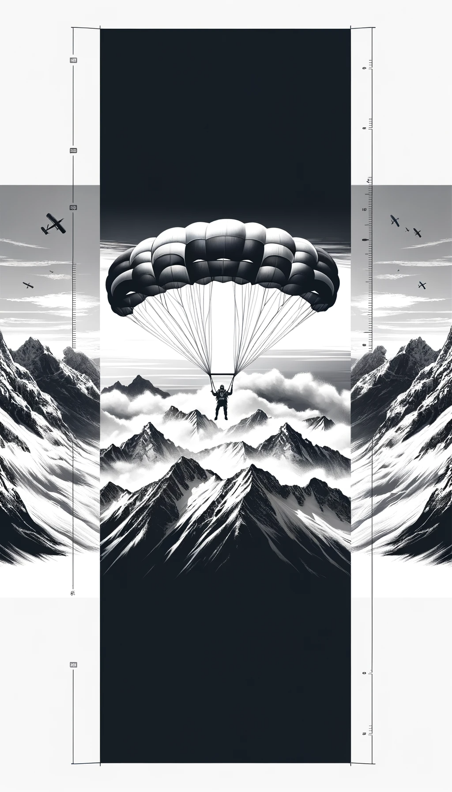

ABOUT ME
Who I Am
Born in Germany to Bosnian war refugees. Finance degree. Self-taught developer.
My parents fled the Bosnian War in 1992 with almost nothing. My mom was a doctor, my dad had a law degree. They rebuilt everything from scratch in Germany. That probably explains why I'm wired the way I am.
I studied finance and management, worked in venture capital, and then went deep into blockchain and AI. Currently Head of AI at Oasis Protocol, where I work on TEEs, AI agents, and privacy-preserving compute. I also write for Forbes and speak at conferences worldwide.
Outside of work, I get frustrated at bullet chess and recently picked up fermenting foods (the kombucha is already great!). When I'm not building, I'm probably traveling, discussing privacy on X, or working on my next side project.

AI-First Projects
Products and tools built from scratch using AI-native workflows. Autonomous agents, Claude Code, and one-person team execution.
eternity.family
Family memory app run by 7 AI agents
iOS app for preserving family memories, built and operated by 7 autonomous AI expert agents (marketing, astronomy, mobile engineering, product, UX, visual design, landing page). Uses Linear for project management. Demonstrates how a single person can ship a full product powered by specialized agents, including fully automated content generation.
ai-psychosis.info
Educational platform + autonomous X agent
Bilingual (EN+DE) educational platform on AI-induced psychosis with an interactive risk assessment quiz, SEO/GEO optimization for AI search engines, and an autonomous ElizaOS-powered X agent that researches papers and discusses AI psychosis around the clock.
ratemyclaudemd.com
CLAUDE.md review platform
Neo-brutalist community platform where developers share and rate their CLAUDE.md files. Features GitHub OAuth authentication, swipe-based voting, Wilson score ranking algorithm, and Claude Haiku moderation. Shipped from zero to production in a single sitting.
Job Alerts Pro
Telegram bot scraping 13+ AI company job boards
Telegram bot that scrapes job boards from Anthropic, DeepMind, xAI, Mistral, and 9+ more top AI companies. Uses GPT-4 to parse CVs and runs a smart 0-100 matching algorithm combining keyword relevance, location, seniority level, and industry scoring to surface the best-fit roles daily.
Talks & Publications
Conference talks on TEEs, AI agents, and blockchain. Plus articles in Forbes, CoinDesk, and more.
Conference Talks
Watch talks and panel discussions from Devconnect, ETHDam, and leading crypto events on TEEs, AI agents, and decentralized infrastructure.
Watch talksPublications
Articles and analysis featured in Forbes, CoinDesk, Decrypt, and Crypto.news covering AI agents, blockchain, privacy, and decentralized systems.
Read articles